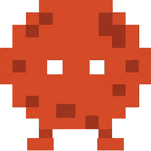
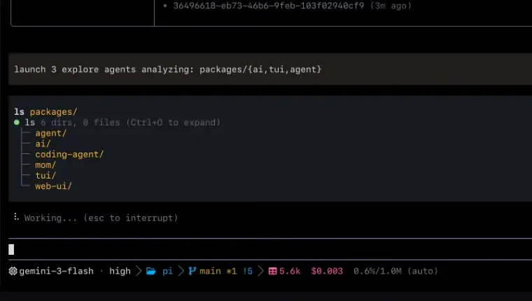
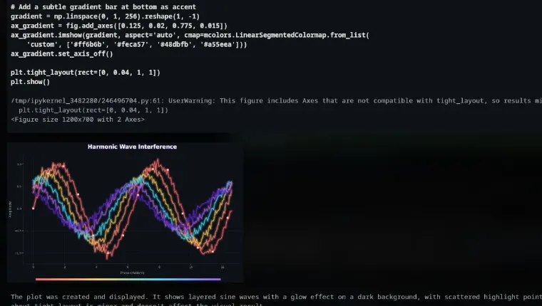
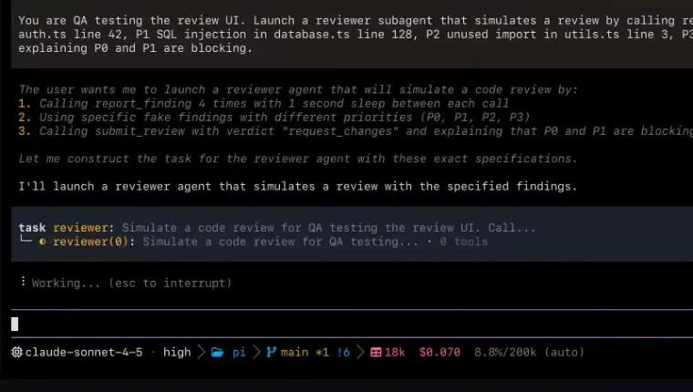
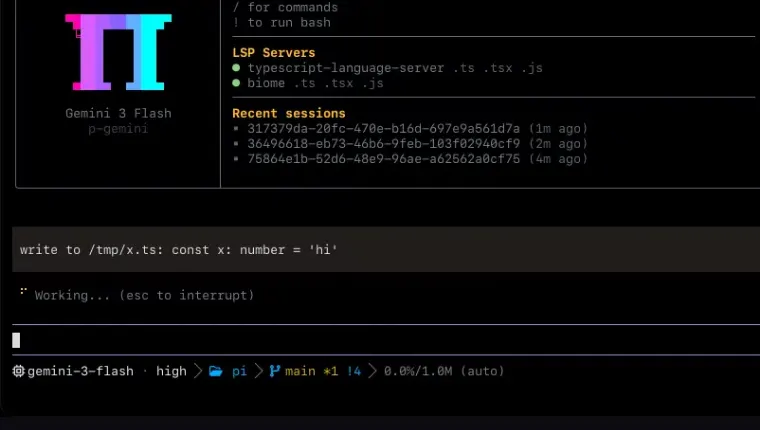
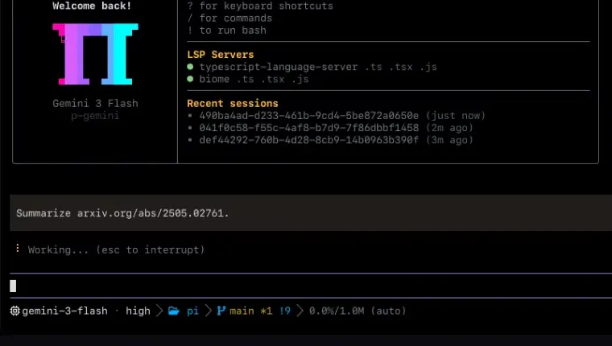

A coding agent with the IDE wired in.
Mars runs your shell, reads your repo, and edits through the same language servers, debuggers, and Rust core your editor uses. One binary. macOS, Linux, Windows.
curl -fsSL https://getmars.eu.cc/install | sh
irm https://getmars.eu.cc/install.ps1 | iex


task fans out into isolated worktrees.

/review ranks findings P0–P3 with a verdict.Stage 01: A rename is a rename, not a find and replace.
Every write goes through the language server. The call hits workspace/willRenameFiles, so re-exports, barrel files, and aliased imports update before the file moves.
Most agents text-match their way through a rename and leave the fallout for you. Mars asks the same server your editor asks, then writes through it.
The same connection carries diagnostics, symbols, code actions, and raw LSP requests. If your editor can see it, the agent can see it — including the language servers you already configured.

Stage 02: Nothing on the hot path shells out.
Other harnesses fork a subprocess for every search, every glob, every shell call. Mars links the real implementations into the binary and keeps them there.
Search, walk, and shell are Rust crates inside the process. bash is an embedded engine with sessions that survive across calls, and the common coreutils run as builtins rather than as programs on your PATH.
That is why the same binary runs on macOS, Linux, and Windows — including machines with no rg, no grep, and no bash to find.
- Rust core
- ~240klines
- Vendored in-process
- ~50klines
- Crates in the core
- 12
- Coreutils as builtins
- 46
- Release targets
- 6
- Platforms
- 3
Stage 03: The web is just another filesystem.
One read call handles local paths, archives, SQLite, PDFs, URLs, and internal schemes. web_search chains ranked providers and hands the URLs straight to it.
An arXiv PDF comes back as structured markdown with anchors intact — the same tool surface you use on local files. Pull requests are paths too: read pr://1428 returns the same shape as read src/foo.ts.
When the job needs a real machine instead of a file, the agent attaches lldb, dlv, or debugpy, drives a headless browser, or controls the desktop through the accessibility tree. The tool changes; the interface does not.

Stage 04: One command to running.
The script downloads the prebuilt binary for your platform, verifies its checksum, and installs it. On Windows it also adds the install directory to your user PATH.
macOS & Linux
curl -fsSL https://getmars.eu.cc/install | sh
Installs to ~/.local/bin and tells you if that directory is not on your PATH. Override with MARS_INSTALL_DIR; the legacy PI_INSTALL_DIR still works.
Windows (PowerShell)
irm https://getmars.eu.cc/install.ps1 | iex
Installs to %LOCALAPPDATA%\mars and adds it to your user PATH.
Bun
bun install -g @marsai-org/coding-agent
Nix
nix profile install github:MarsAI-org/mars-agent
Pinned with mise
mise use -g github:MarsAI-org/mars-agent
Prefer to do it by hand? Grab the archive for your platform from
GitHub Releases —
mars-<platform>-<arch> for linux-x64, linux-arm64, darwin-x64, darwin-arm64, win32-x64, and win32-arm64.